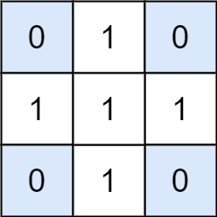

1074. 元素和为目标值的子矩阵数量
枚举列对把矩阵压成一维：每行的列段和压成一个数后，就是「和为 target 的子数组」，用前缀和哈希计数（同 560）。
思路
- 每行先算列前缀和，任意列段
[c1, c2)在该行的和都能 O(1) 拼出。 - 枚举列对
(c1, c2)（cols²个），把每一行的列段和压成一个数——矩阵里跨这个列带的子矩阵 ↔ 一维数组里的子数组。 - 一维问题照搬 560：前缀和哈希计数，
cnt[prefix - target]就是能配对的行段数；前缀和用 long（100×100×1000 累加防溢出）。 - 空前缀
0先记 1 次，从第 0 行开始的行段才数得进去。
图解
最优解
1import java.util.*;2 3class Solution {4 public int numSubmatrixSumTarget(int[][] matrix, int target) {5 int rows = matrix.length, cols = matrix[0].length, ans = 0;6 // 每行先算前缀和：rowPrefix[r][c] = 第 r 行前 c 列之和，任取列段的和 O(1) 拼出7 long[][] rowPrefix = new long[rows][cols + 1];8 for (int r = 0; r < rows; r++) {9 for (int c = 0; c < cols; c++) rowPrefix[r][c + 1] = rowPrefix[r][c] + matrix[r][c];10 }11 // 枚举列边界 [c1, c2)：把每行的这一段压成一个数，问题变成一维「和为 target 的子数组」12 for (int c1 = 0; c1 < cols; c1++) {13 for (int c2 = c1 + 1; c2 <= cols; c2++) {14 Map<Long, Integer> cnt = new HashMap<>();15 cnt.put(0L, 1);16 long prefix = 0;17 for (int r = 0; r < rows; r++) {18 prefix += rowPrefix[r][c2] - rowPrefix[r][c1];19 // 同 560：两个前缀和相差 target，中间夹的行段就是一个答案子矩阵20 ans += cnt.getOrDefault(prefix - target, 0);21 cnt.merge(prefix, 1, Integer::sum);22 }23 }24 }25 return ans;26 }27}题目
给出矩阵 matrix 和目标值 target，返回元素总和等于目标值的非空子矩阵的数量。
子矩阵 x1, y1, x2, y2 是满足 x1 <= x <= x2 且 y1 <= y <= y2 的所有单元 matrix[x][y] 的集合。
如果 (x1, y1, x2, y2) 和 (x1', y1', x2', y2') 两个子矩阵中部分坐标不同（如：x1 != x1'），那么这两个子矩阵也不同。
示例 1：

输入：matrix = [[0,1,0],[1,1,1],[0,1,0]], target = 0 输出：4 解释：四个只含 0 的 1x1 子矩阵。
示例 2：
输入：matrix = [[1,-1],[-1,1]], target = 0 输出：5 解释：两个 1x2 子矩阵，加上两个 2x1 子矩阵，再加上一个 2x2 子矩阵。
示例 3：
输入：matrix = [[904]], target = 0 输出：0
提示：
1 <= matrix.length <= 1001 <= matrix[0].length <= 100-1000 <= matrix[i][j] <= 1000-10^8 <= target <= 10^8
题面取自力扣当前版本。
数据快照 2026-11-04。题面版权归力扣所有，本站点仅供本人学习使用，请勿对外发布。